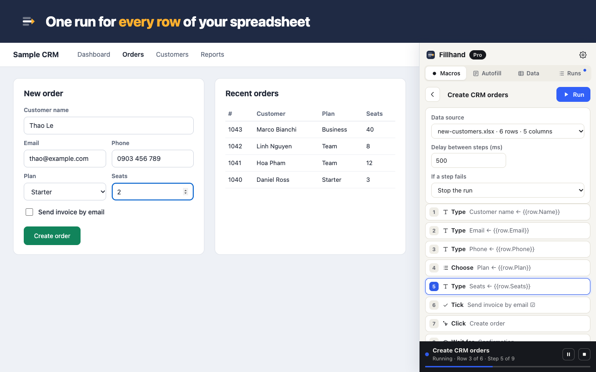
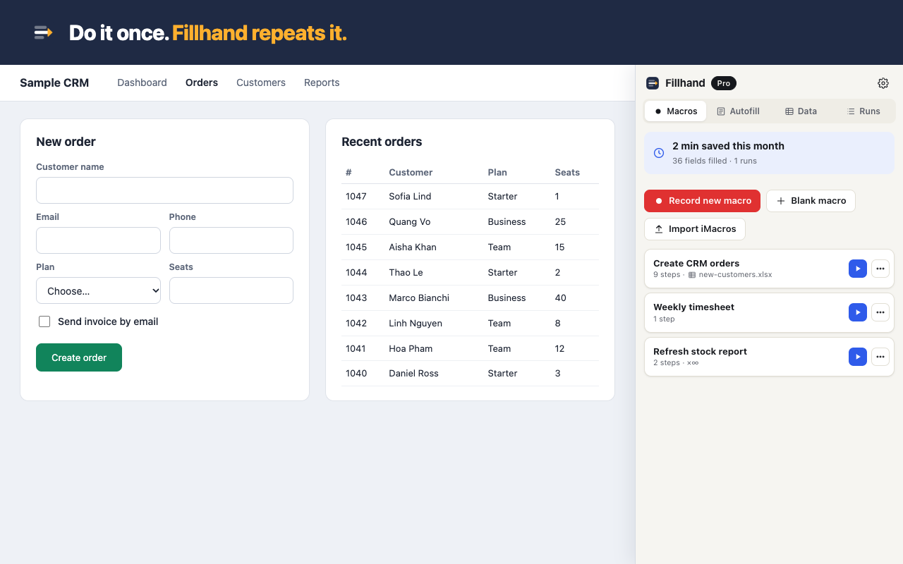

Chrome extension · free to start
Stop re-typing spreadsheets into web forms.
Record a form once. Fillhand fills it again for every row of your CSV or Excel file — and tells you exactly which rows went through.
No account · no tracking · your data stays in your browser

Built for the boring part of your job
Ops & admin staff
Customers into the CRM, orders into the supplier portal, timesheets into HR — 200 rows before lunch instead of a whole day.
Shop owners
New products, price changes, stock updates in an admin that has no bulk import.
Agents & brokers
The same client into three carrier or government portals. Save the client once as a profile, fill each portal with one click.
Three steps
- Record. Fill the form once by hand. Fillhand writes down each field by its label, not by fragile auto-generated ids.
- Map. Import your sheet and put
{{row.Column}}where the values go. - Run. Watch it go row by row. Failed rows are flagged, fixed and re-run on their own.

Handles the forms other tools give up on
- Dropdowns matched by the text you see, multi-choice cells like
Red; Blue - Checkboxes from
yes / no / x / 1 / 0columns - Date fields that take
05/11/2026from Excel - Search-as-you-type fields (types key by key)
- Rich text editors, iframes, web components (shadow DOM)
- “Are you sure?” confirm and alert pop-ups during a run
- Links that open a new tab — the run follows it and comes back
- CAPTCHA: pauses and notifies you; continues when you solve it
Coming from iMacros?
Chrome switched iMacros off. Fillhand imports your .iim files — TAG, URL GOTO, WAIT, SET, {{!COL1}} datasources — and tells you line by line what to check.
Fair pricing
Free
$0
Unlimited runs, loops and recording · 5 macros · 5 autofill profiles
Pro
$8.99/mo
Unlimited macros and profiles · sync · run for every row of a CSV/Excel file · schedules · or $69/year, $99 once
Questions
Does my data go to a server?
No. Macros, profiles and spreadsheets are stored in your browser. The only network call is checking a paid licence key with our payment provider.
Does it work on internal company sites?
Yes — any site you can open in Chrome, including intranets and portals behind a login. You log in yourself; Fillhand never stores passwords.
Can it solve CAPTCHAs?
No, on purpose. Fillhand pauses, notifies you, and carries on after you solve it.
What if the site changes?
Steps find fields by label, name and visible text first. If one breaks, the run stops on that step and you can re-pick the field in two clicks.
Can I cancel?
Any time, from the receipt email. The free plan keeps working.